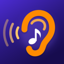

Need help? Email contact@appgrowthatx.com and we’ll get back to you, usually within two business days. Including your iPhone model and iOS version helps.
Open Settings on your iPhone, tap your name, then Subscriptions, then Ear Training, and tap Cancel Subscription. You keep access until the end of the period you paid for. To avoid being charged after a free trial, cancel at least 24 hours before the trial ends. You can also open this screen from Profile → Subscription in the app.
Tap Restore Purchases on the subscription screen or in Profile, and make sure you are signed in with the same Apple Account you bought with. If it still doesn’t work, email us.
Payments go through Apple, so refunds are handled by Apple. Request one at reportaproblem.apple.com.
Yes. Install the app on the other device, sign in with the same Apple Account, and tap Restore Purchases.
Check that the ringer switch (or Action button) is not set to silent mode, turn the volume up, and make sure no other app is using the audio. If you use Bluetooth headphones, try disconnecting and reconnecting them.
Bluetooth audio arrives a little late. Calibrate once from the rhythm screen so the delay doesn’t count against you, or use the iPhone speaker or wired headphones.
Make sure microphone access is on in Settings → Privacy & Security → Microphone → Ear Training, and try a quieter room. Sing each note on “ah” and hold it for about a second. Your voice is analyzed on your phone and never recorded.
Yes. You can pick your note naming in Profile.
Not necessarily. You earn rest days as your streak grows, and the app uses one automatically to cover a missed day.
Yes. Your progress is stored only on your phone, so deleting the app deletes it. Your subscription is not affected: reinstall and tap Restore Purchases.
There are no accounts, no ads and no tracking. Read the full Privacy Policy and Terms of Use.
AppGrowth ATX LLC · contact@appgrowthatx.com